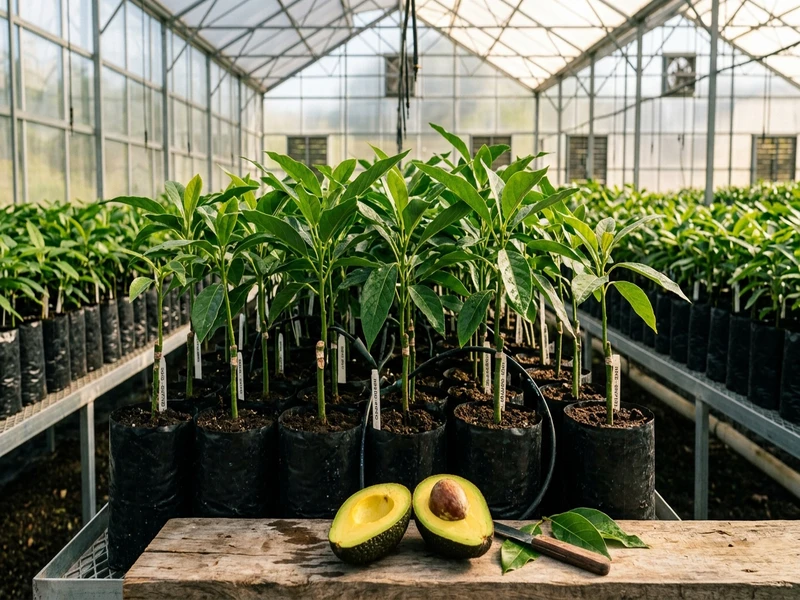
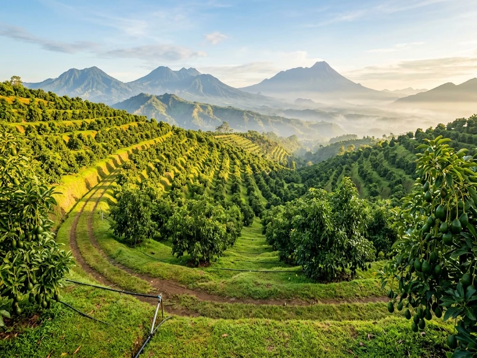
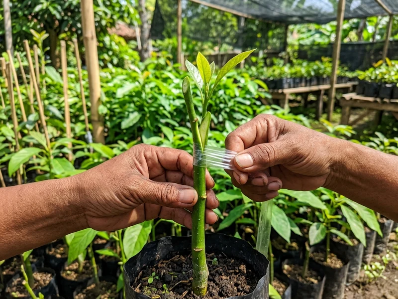
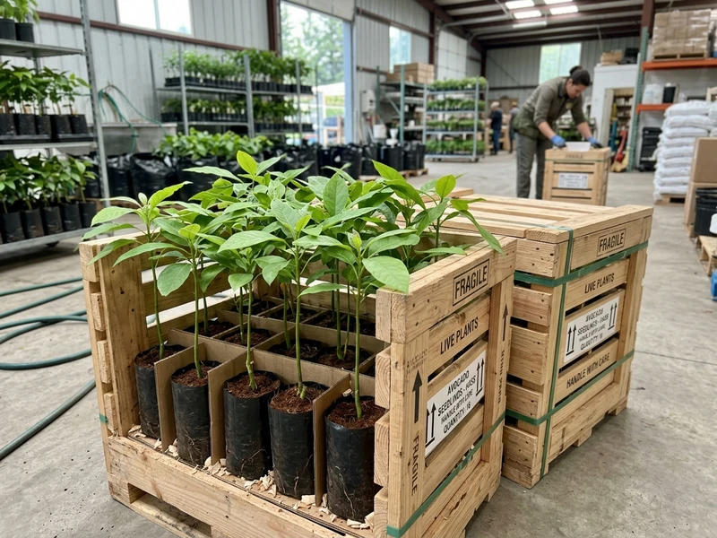

Layanan Kami
Pendampingan menyeluruh dari penyediaan bibit varietas murni, analisis kesesuaian lahan, hingga garansi selamat sampai kebun Anda.

1. Penyediaan Bibit Alpukat Eceran & Tabulampot
Bagi Anda pemilik pekarangan rumah, villa, atau penghobi tanaman buah dalam pot (tabulampot), kami menyediakan bibit polybag siap tanam dengan tinggi rata-rata 60–90 cm. Setiap bibit telah melalui seleksi kesehatan batang dan perakaran yang kokoh sebelum dikirim.
- Minimal order mulai dari 2 bibit (bisa campur varietas).
- Bebas pilih varietas dataran rendah (Miki, Kelud, Aligator) atau dataran tinggi (Hass).
- Sudah termasuk panduan penanganan awal bibit saat tiba via PDF.

2. Pengadaan Partai Besar & Kemitraan Proyek Perkebunan
Kami melayani pengadaan bibit alpukat skala 50 hingga ribuan batang pohon untuk proyek perkebunan komersial, program CSR lingkungan, kelompok tani, maupun instansi pemerintah. Kami menjamin keseragaman ukuran tinggi bibit dan keaslian varietas 100%.
- Harga khusus borongan / diskon bertingkat untuk kuantitas > 50 bibit.
- Jadwal pengiriman terjadwal dan terkoordinasi langsung dengan armada truk sewa khusus.
- Bonus bibit cadangan (sulam) gratis hingga 5% untuk memitigasi risiko di lapangan.

3. Konsultasi Kesesuaian Lahan & Pendampingan Budidaya
Kunci keberhasilan menanam alpukat adalah mencocokkan varietas dengan ketinggian mdpl dan curah hujan setempat. Tim hortikultura kami siap menganalisis data lahan Anda dan menyusunkan strategi penanaman yang tepat sasaran.
- Rekomendasi varietas terbaik berdasarkan elevasi (0-1.500 mdpl).
- Konsultasi layout jarak tanam efisien (sistem segitiga atau bujur sangkar).
- SOP jadwal pemupukan (fase vegetatif dan generatif) serta tips pangkas bentuk tajuk.

4. Pengiriman Peti Kayu & Garansi Hidup 100% Sampai Tujuan
Tanaman hidup memerlukan penanganan logistik yang sangat spesifik. Astana Avocado menggunakan sistem packing palet kayu berongga ventilasi dengan pengikat media cocopeat lembap. Jika bibit patah atau mati saat diterima, kami ganti baru!
- Rangka kayu kokoh melindungi daun dan sambungan pucuk dari tindihan kargo lain.
- Pengikatan polybag rapat mencegah media tanah tumpah dan perakaran terganggu.
- Klaim garansi mudah dan cepat: cukup sertakan video unboxing dalam 1x24 jam.
Kalkulator Estimasi Kebutuhan Kebun Alpukat
Hitung perkiraan kebutuhan bibit, luas lahan yang dibutuhkan, dan estimasi biaya awal untuk rencana kebun Anda.
Parameter Lahan Anda
Hasil Perhitungan Estimasi
Pilihan Paket Investasi Kebun Populer
Pilihan paket siap tanam dengan bonus pendampingan dan potongan biaya khusus.
Paket 20 Bibit
Cocok untuk pekarangan luas, pagar hidup sekeliling kebun, atau tabulampot.
- 20 Bibit varietas bebas pilih (Miki/Aligator/Kendil)
- Packing kayu peti kokoh 1 peti
- Buku panduan tanam & SOP pupuk digital
- Konsultasi via WhatsApp
Paket 100 Bibit
Cocok untuk memulai kebun komersial keluarga skala 1/3 hingga 1/2 hektar.
- 100 Bibit varietas pilihan (bebas mix)
- GRATIS 5 Bibit Cadangan (Total 105 bibit)
- Packing kayu peti standar ekspedisi aman
- Panduan SOP pemupukan bertahap
- Prioritas konsultasi agronomis
Paket 300 Bibit
Kebutuhan penuh untuk 1 hektar kebun jarak tanam 6x6 meter berorientasi ekspor & supermarket.
- 300 Bibit tinggi seragam 70-90 cm
- GRATIS 15 Bibit Sulam Cadangan (Total 315 bibit)
- Bisa opsi pengiriman sewa truk khusus langsung ke kebun
- Pendampingan jarak jauh sampai panen perdana